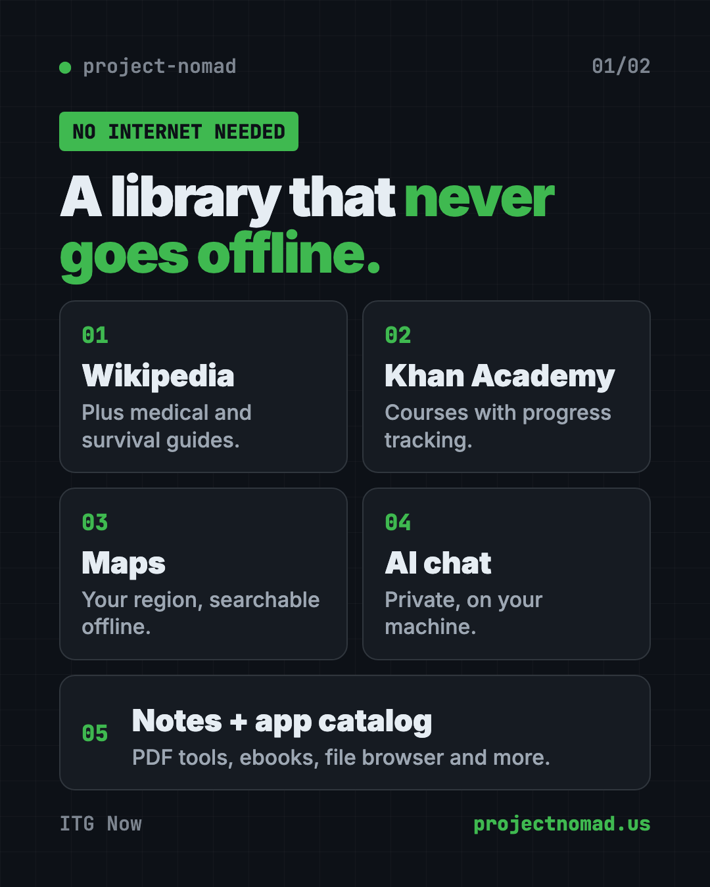
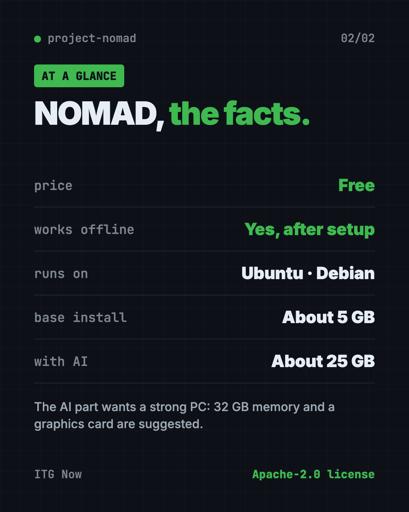

Project NOMAD: Free Offline Knowledge Server (2026 Guide)
- Published 15 Oct 2026
- Updated 16 Oct 2026
- 9 min read
- License Apache-2.0
- By the ITG Now team
In this guide (12)
- Key takeaways
- What is Project NOMAD?
- What's inside Project NOMAD?
- How to use Project NOMAD (real examples)
- Who should use Project NOMAD?
- Does Project NOMAD work without internet?
- What computer do you need for Project NOMAD?
- How to install Project NOMAD on Ubuntu or Debian
- Let Claude or Codex set it up for you
- Project NOMAD at a glance
- Our take
- FAQ
Project NOMAD is a free offline knowledge server. It puts Wikipedia, medical guides, Khan Academy lessons, maps and a private AI helper on a computer you own, and it all keeps working when the internet doesn't.
You set it up once while you're online. After that, you open it in any web browser, at home, at a cabin or on a boat. This guide covers what's inside, who it's for, and the exact install steps.
Key takeaways
- Free and open source. Apache-2.0 license, about 40.3K stars on GitHub.
- Works with no internet after setup. The makers say it has zero built-in tracking.
- One control panel installs and updates everything: library, courses, maps, notes and AI chat.
- Runs on Linux. Ubuntu 26.04 LTS is recommended. Windows works through a community-supported path.
- The AI part needs a strong computer. The rest runs on modest hardware.
What is Project NOMAD?
Think about how often you look things up. A recipe. A rash. A route. A math lesson for your kid. Now picture the internet going out for a week.
Project NOMAD keeps a big chunk of that knowledge on your own machine. The makers describe it as an "offline-first knowledge and education server." A server here just means a computer that stores things and shows them to you in a web browser.
It's built by Crosstalk Solutions. Under the hood, it bundles several well-known free projects, like Kiwix for Wikipedia and Kolibri for courses. You don't set them up one by one. A control panel called the Command Center installs, sets up and updates them for you.
What's inside Project NOMAD?
From the README, here's what you get:
- Information Library. Offline Wikipedia, medical references, survival guides and ebooks, powered by Kiwix.
- AI Assistant. A private AI chat that runs on your machine. You can upload documents and ask questions about them.
- Education Platform. Khan Academy courses with progress tracking and several users, powered by Kolibri.
- Offline Maps. Download maps of your region to view and search with no signal.
- Notes. A simple note app that stays on your device.
- Data Tools. Encryption, encoding and analysis tools through CyberChef.
- Supply Depot. A one-click app catalog with PDF tools, a file browser, an e-book library, a password manager and more.
- System Benchmark. Score your hardware and compare it on a community leaderboard.
- Setup wizard and auto-updates. A guided first run, plus optional updates on a schedule you pick.

How to use Project NOMAD (real examples)
- Storm prep at home. Power and internet go out, but your backup battery keeps a small PC running. Your family can still look up first aid on Wikipedia or a medical guide.
- School with weak Wi-Fi. A teacher sets up NOMAD on one computer. Students open Khan Academy lessons on their own devices over the local network, and their progress is tracked.
- Life off the grid. On a boat, in an RV or at a remote cabin, you can pull up maps of your region and read up on repairs.
- Private document questions. Upload a manual or a stack of PDFs to the AI Assistant. Ask it questions without sending anything to a company's servers.
- A homeschool shelf. Add ebooks and courses once. Your kids get a safe, offline library that doesn't change when a website goes down.
💡 Tip: Download everything you want while you still have good internet. Wikipedia and maps are big, so pick your region and topics with care.
Who should use Project NOMAD?
- Families who want to be ready for storms, outages or emergencies.
- People in rural areas, on boats, in RVs or off the grid.
- Teachers and parents who want Khan Academy lessons without Wi-Fi.
- Clinics, camps or aid workers who need medical references with no signal.
- Hobbyists who like building a home server.
You need some comfort typing commands. Setup happens in a terminal window, not a click-through installer. Once it's running, though, everything lives in a normal browser.
Does Project NOMAD work without internet?
Yes. The README says you only need internet during the first install, and when you choose to download more content later. Otherwise, it runs fully offline.
The makers also say NOMAD has zero built-in telemetry. Telemetry is the hidden usage data many apps send home. It does briefly check if you're online, by contacting Cloudflare, GitHub or its own website, and you can change that check in Settings.
What computer do you need for Project NOMAD?
NOMAD itself is light. The README lists these minimum specs:
- A 2 GHz dual-core processor
- 4 GB of memory (the whole thing without AI runs in under 1 GB)
- At least 5 GB of free disk space (plan for 10 GB)
- A Debian-based Linux, with Ubuntu 26.04 LTS recommended
The AI Assistant changes the picture. Adding it brings the install to about 25 GB. For good AI results, the makers suggest:
- An AMD Ryzen 7 or Intel Core i7
- 32 GB of memory
- An NVIDIA RTX 3060 graphics card or similar
- At least 250 GB of free space, ideally on a fast SSD drive
Their website has a hardware guide with builds from $150 to over $1,000.

How to install Project NOMAD on Ubuntu or Debian
These are the steps from the README. You need a Debian-based Linux computer, internet during setup, and admin rights.
- Open Terminal on your Ubuntu or Debian computer.
- Copy and paste this, then press Enter:
sudo apt-get update && \
sudo apt-get install -y curl && \
curl -fsSL https://raw.githubusercontent.com/Crosstalk-Solutions/project-nomad/refs/heads/main/install/install_nomad.sh \
-o install_nomad.sh && \
sudo bash install_nomad.sh
- When it finishes, open a web browser and go to this address:
http://localhost:8080
- Follow the setup wizard. Pick the content you want, like Wikipedia, maps or courses.
- Let the downloads finish while you're still online. Then you're ready to go offline.
Other devices on your home network can open it at your computer's address, port 8080.
On Windows? The makers point to a WSL2 install guide on projectnomad.us. WSL2 is a way to run Linux inside Windows. They call this route community-supported.
⚠️ Heads up: NOMAD has no passwords built in. Anyone who can reach it on your network can use it. The makers strongly advise against putting it on the open internet.
If you ever need to start fresh, the README has an uninstall script. It can't be undone, so back up anything you care about first.
Let Claude or Codex set it up for you
Claude Code and OpenAI Codex are AI helpers that can run setup steps on your computer. You paste a request, it does the steps, and you approve each one.
Copy and paste this:
Please help me install Project NOMAD from github.com/Crosstalk-Solutions/project-nomad.
1. Check that I'm on Ubuntu or Debian, and how much disk space and memory I have.
2. Tell me if my computer can handle the AI Assistant, based on the README's specs.
3. Run the official quick install command. Explain each part before you run it.
4. Confirm that http://localhost:8080 opens.
5. Show me how other devices on my home network can reach it.
Then try asking:
I have 200 GB free. Help me choose which NOMAD content to download first for a family emergency kit.
How do I block other devices on my network from reaching NOMAD?
NOMAD won't start after a reboot. Use the helper scripts in /opt/project-nomad to fix it.
💡 Tip: Only approve steps you understand. If a command looks odd, ask your AI helper "what does this do?" first.
Project NOMAD at a glance
| Price | Free (you supply the computer) |
| Works offline | Yes, after setup |
| Platforms | Ubuntu or Debian Linux; Windows via WSL2 (community-supported) |
| License | Apache-2.0 (open source) |
| GitHub stars | About 40.3K |
| Disk space | About 5 GB base, about 25 GB with AI, more for content |
| Best for | Families, schools and remote teams who need knowledge with no signal |
Our take
Project NOMAD turns a spare computer into an offline library, classroom, map and AI helper. As an offline knowledge server, it covers a lot of ground. That's a lot of value for free, and the control panel saves you from setting up each piece by hand.
What we like:
- Many trusted free tools in one place, managed from one screen.
- Honest docs about hardware, privacy and security.
- Zero built-in tracking.
- Works for the whole household or classroom over the local network.
- Apache-2.0 means you can use it at work, too.
What to watch for:
- Setup needs a Linux computer and some typing.
- The AI part wants a powerful machine with a good graphics card.
- No logins, so you have to control who's on your network.
- Wikipedia, maps and courses can fill a big drive fast.
Want more private AI on your own machine? Read about DeepTutor, a free AI tutor, or Open Notebook, a private place to chat with your documents. Project NOMAD also showed up in our trending repos list for the week of March 23.
FAQ
Is Project NOMAD free?
Yes. The software is free and open source under the Apache-2.0 license. Your only cost is the computer and storage you run it on.
Does Project NOMAD need internet?
Only during install, and when you choose to download more content. After that, it works fully offline with zero built-in tracking.
Can I run Project NOMAD on Windows or Mac?
It's built for Debian-based Linux like Ubuntu. Windows users can follow a community-supported WSL2 guide. The README doesn't list Mac support.
Do I need a powerful computer for Project NOMAD?
Not for the basics. The core needs about 5 GB of disk and runs in under 1 GB of memory. The AI Assistant needs much more, ideally 32 GB of memory and a graphics card.
Is offline Wikipedia included in Project NOMAD?
Yes. The Information Library uses Kiwix to give you offline Wikipedia, medical references, survival guides and ebooks.
Is Project NOMAD safe to put on the internet?
The makers say no. It has no logins, so they strongly advise keeping it on your own network only.
Get Project NOMAD: github.com/Crosstalk-Solutions/project-nomad
More free notes and productivity tools
- Tolaria Tolaria is a free offline notes app for Mac, Windows and Linux. Your notes are plain files you own, with full version history and no account.
- Odysseus Odysseus is a free self-hosted AI workspace for chat, deep research, documents, email, notes and calendar. You run it yourself, so your data stays with you.
Latest AI news
- Meta gives away its big Muse Spark AI for free
- OpenAI agents switched off their own safety monitoring
- DeepSeek open-sources DeepInfer to run its V4.1-Flash model
- Southeast Asia digital economy to hit $368 billion
Keep reading

VoiceStudio: Free ElevenLabs Alternative
VoiceStudio is a free ElevenLabs alternative. Clone a voice, dub videos and turn text into speech on your own Mac, Windows or Linux computer.